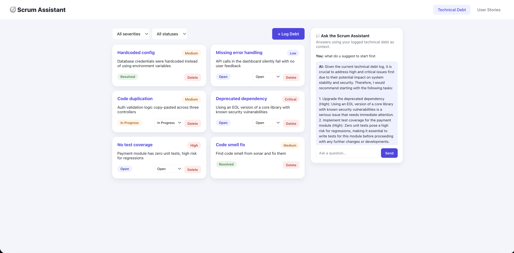

Scrum & Technical Debt Tracker
Log technical debt, chat with an AI assistant grounded in your own data, and generate user stories with acceptance criteria from a plain-language feature description.
React 19FastAPIPostgreSQL
SQLAlchemyOllama (Mistral)
- Full backend rewrite: migrated from Java/Spring Boot to Python/FastAPI — redesigned the data model and REST API from scratch while preserving all original functionality.
- Grounded AI, not a black box: the chat panel pulls live technical-debt rows straight from PostgreSQL into the prompt, so answers to "what should we tackle first?" are based on real logged data, not guesses.
- Free, local AI: replaced a paid OpenAI integration with a locally-run Ollama (Mistral) model — no API key, no billing, runs entirely offline.
- Defensive JSON parsing: small local LLMs don't reliably return clean JSON, so story generation regex-extracts and validates the structured output instead of trusting it outright.
- Security hardening: removed hardcoded database credentials and a partially-committed API key in favor of environment-variable-driven config.